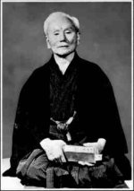

Gishin Funakoshi
de grondlegger van http://www.jka.or.jp/">shotokan karate
door Dennis de Booij
Op 10 november 1868 werd Funakoshi geboren in het dorp Shuri op het eiland Okinawa dat ten zuiden van Japan ligt. Het eiland ligt net zover van Japan als van China en de geschiedenis van Okinawa wordt gekenmerkt door zowel Chinese als Japanse onderdrukking waarbij het bezit op conventionele wapens (zoals zwaarden) verboden was. Chinese zeelieden, handelaars en zakenlui introduceerden hun krijgskunsten (het Chinese boksen) in Okinawa door hun contacten met de eilandbewoners. Deze beide externe invloeden zorgden er voor dat op Okinawa een vechtkunst werd ontwikkeld die zich richtte op zowel het ongewapend gevecht als technieken met geïmproviseerde wapens (m.n. landbouwwerktuigen zoals de nunchaku (dorsvlegel) en de kama (handzeis).
Als kind was Funakoshi, net als Kano en Ueshiba, klein van stuk en had een zwakke gezondheid. Zijn ouders wilden dat hij daarom veel aandacht kreeg en lieten het kind door de ouders van Funakoshi's moeder opvoeden. Op de basisschool werd hij bevriend met de zoon van een beroemde grootmeester op het eiland, Anko Azato. Azato was een zeer selectief leraar en rond de karate kunst (toen nog bekend onder diverse benamingen en stijlvormen, bijv. Tode of Okinawa-Te) hing altijd een zekere mate van geheimhouding. Maar na veel aandringen van Funakoshi stemde Azato toch toe om hem les te geven in het Shuri-te (Shuri-vuist). In 1890 werd Funakoshi door Azato geïntroduceerd bij een andere grootmeester, Yatsune Itosu, die hem trainde in Naha-te. Op dat moment was Itsou bezig om het karate voor een zo groot mogelijke groep mensen, met name kinderen, toegankelijk te maken. Funakoshi was zeer gecharmeerd door Itosu's visie en voltooit ondertussen een opleiding tot basisschoolonderwijzer. Rond 1900-1905 werd Itosu's visie gerealiseerd: zijn karate-stijl werd officieel onderdeel van de gymlessen van de basis- en middelbare scholen van Okinawa.
Funakoshi ontwikkelde en integreerde de twee stijlen van zijn meesters en bezocht alle grote scholen en verschillende stijlrichtingen. Funakoshi wordt zo de meest eclectische karateka van zijn tijd. Hij wordt uitgenodigd om een aantal demonstraties in Japan te geven o.a. in 1922 bij Jigoro Kano's Kodokan dojo (die hij later ook karateles gaf in ruil voor eten en onderdak) en voor de Japanse keizer in het keizerlijk paleis. In dit jaar vertrekt Funakoshi definitief van Okinawa naar Tokio waar hij karateles geeft aan met name intellectuelen en studenten. Vanuit zijn achtergrond als docent kon Funakoshi ideeën in een bondige systematische methode samenvatten en zo introduceerde hij de drie fundamentele categorieën in het karateonderwijs: kihon (basistraining van individuele technieken), kata (stijlvormen) en kumite (partneroefeningen). Als de jaren verstrijken neemt de populariteit van het karate toe. In 1936 richt een groep leerlingen van Funakoshi een fonds op waarmee zij de contructie van een eigen Dojo financieren. De oefenruimte wordt genoemd naar Funakoshi die naast onderwijzer en karateleraar ook dichter was. Hij schreef onder het pseudoniem 'Shoto' wat pijnbomen betekent. Het ruisen van de pijnbomen in de wind inspireerde hem tot het maken van gedichten. De dojo wordt dan ook Shotokan (het huis van Shoto) genoemd.
In 1936 wijdde Funakoshi zich met name aan het onderzoek dat hij noodzakelijk acht om zijn methode te doen evoluëren. Hij veranderde de schrijfwijze van het woord 'Karate'. In plaats van de twee ideogrammen die 'Chinese hand' betekend, verandert hij het eerste ideogram ('Kara' - Tang of China) en vanaf dat moment wordt 'Kara' vertaald als leeg ('Kara' - het Zen-boeddhistische principe van leegheid). Hij ontwikkelt een totaal aanbod van technieken en een gradueringssysteem. En hij definieert de filosofische dimensie van zijn stijl. Karate is niet langer een kunst (bu-jutsu - kunst van oorlogvoeren) maar een 'do' (de weg der zelfontplooiing).
Funakoshi karakteriseerde dit als volgt:
'Het uiteindelijke doel van karate is
geen nederlaag of overwinning,
maar de verbetering van het
karakter van de beoefenaar'.
Funakoshi stierf in Tokio op 26 april 1957. Op een gedenkteken voor Funakoshi in de Enkaku-ji tempel in Kamakura staat een inscriptie gemaakt door de hoofdpriester:
Karate ni sente nahsi ("Er is geen eerste aanval in karate")